An Introduction to Mechanisms
1 Cams
Learn It
- A mechanism is a device that takes an input motion or force and outputs a different motion or force.
- Gears trains, for instance, are a type of mechanism.

- This gear train takes rotary motion as input, and outputs rotary motion. The difference between the input and output is the speed and direction of the motion.
- In this project you're going to be looking at different type mechanism called a Cam Mechanism.
Learn It
- Cam mechanisms turn rotary motion (round and round) into reciprocating motion (up and down)

Learn It
- A cam mechanism is made up of three main parts: cam, slide and follower. In the image below, the slide (or guide) is the red ring.

- The cam rotates continually. The follower is a rod that rests on the edge of the turning cam.
- The follower moves up and down, but can't move to the side because of the slide or guide.
- This means the cam follower can only:
- Rise
- Fall
- Dwell
Learn It
- We can draw what are know as
displacement graphsfor any cam mechanism. - A displacement graph shows how the follower moves as the cam rotates.
- Follow these steps to create your own displacement graphs. This one is for a pear cam.
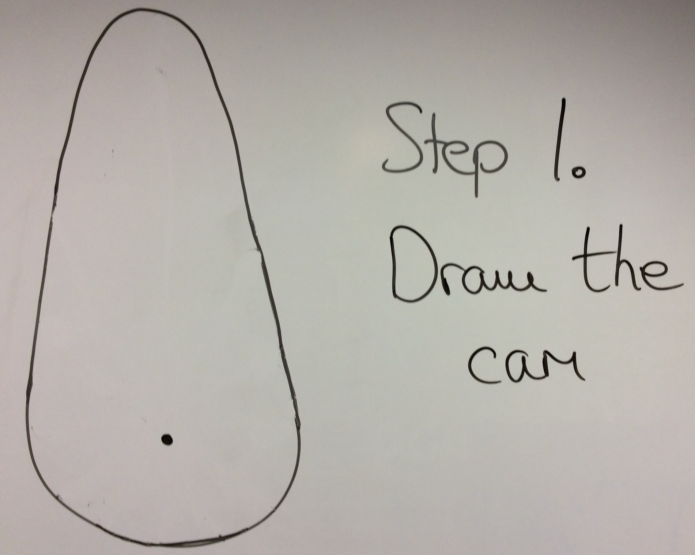 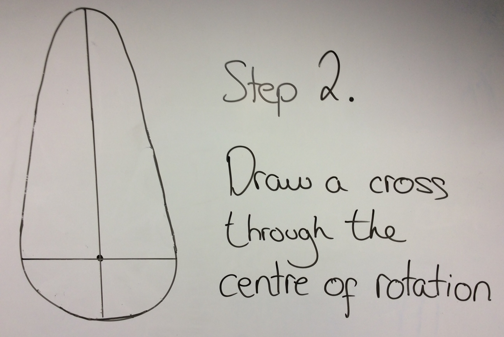 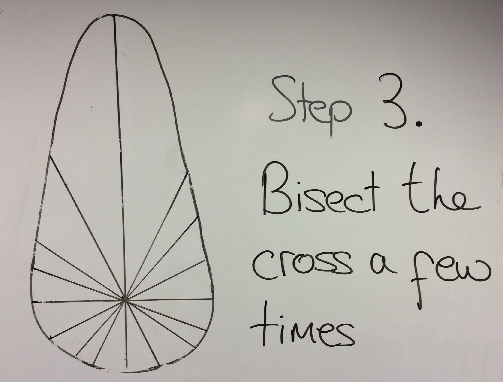 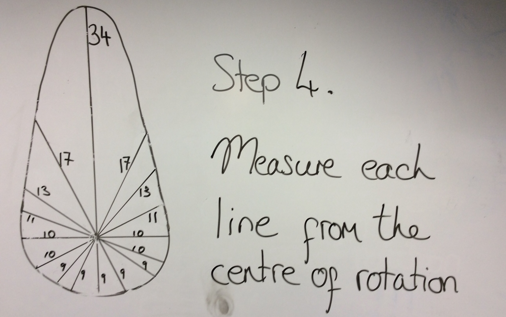 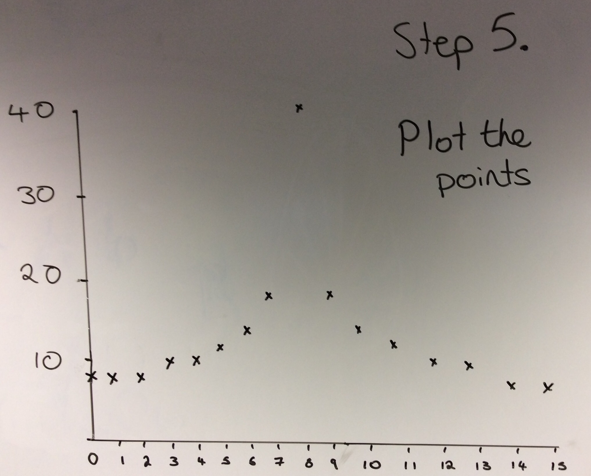 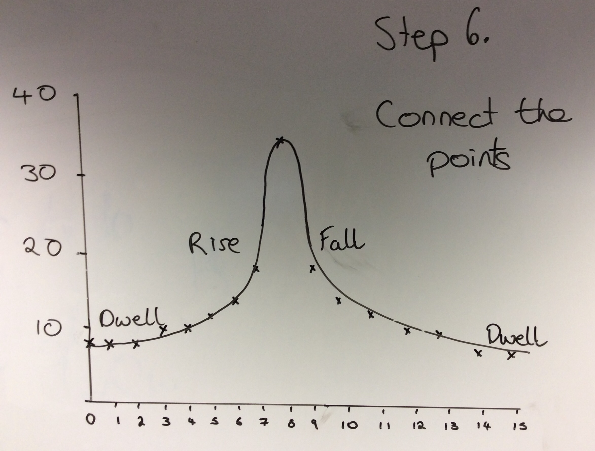
Badge It - Silver
- For each of the cams listed below, try to
roughlysketch the displacement graphs you think you would get.- Elliptical cam
- Eccentric cam
- Drop cam
Try It
- Let's try and make one of the Cams in SolidWorks
- We'll make a pear-shaped Cam.
- If you've forgotten how to get started in SolidWorks, then ask your teacher for some help.
- First we'll need a couple of circles, as shown below
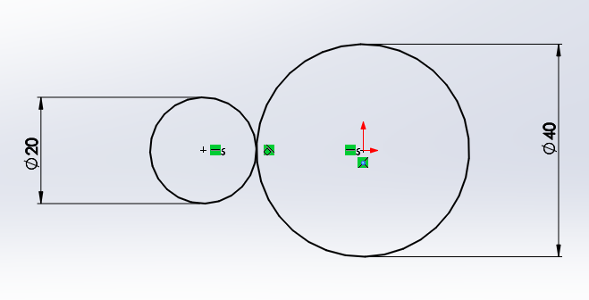
- Notice the little symbol between the circles like this.
- This means they have a tangential relationship (look up the word tangent if you don't know what that means)
- You can give sketch elements a tangential relationship by shift-clicking both elements and choosing
tangentfrom the menu on the left

- The centre of the two circles also have a
horizontalrelationship - Now draw two straight lines as shown below. Don't let them touch the circles yet.
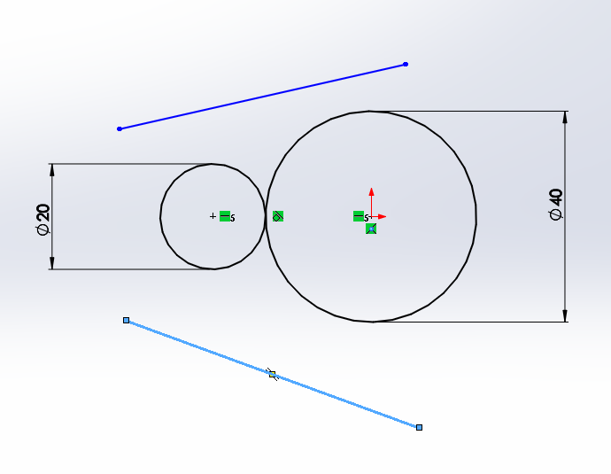
- We can now give the lines a tangential relationship with each of the circles.
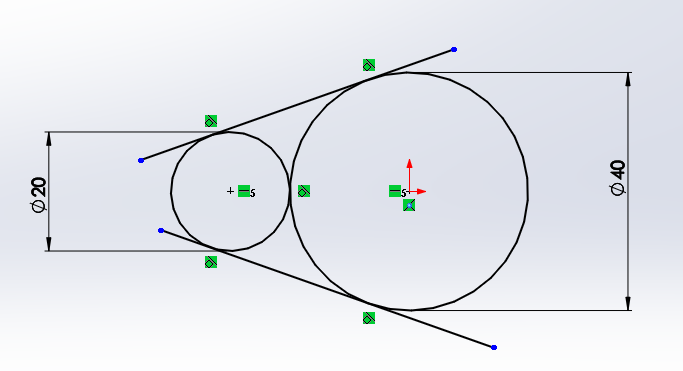 -Then use thew trim tool to cut away the lines you don't want 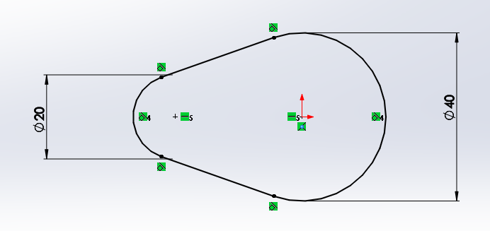
- Lastly you can add a small circle in the cam, where doweling would go.
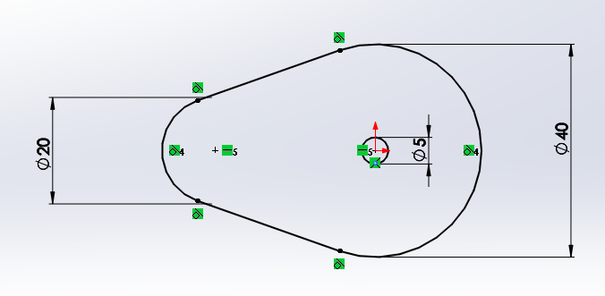
- Once completed, you can extrude the sketch.
- Note that this is just practice and not your actual cam, which will need to have a different center cut-out.
Badge It - Gold
- Using SolidWorks, produce either a heart, drop, irregular or ratchet cam.
- The Cam's diameter must not exceed 60mm.

- Screenshot your finished sketches including the part where it states your sketch is fully defined.
Try It
- We can animate cams in SolidWorks as well.
- Create a new assembly and import in one of your cams.
- Now select
New Motion Studyfrom the tool bar.
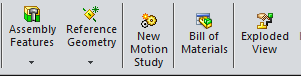
- Near the bottom of the screen, the motion study will appear. In it's tool bar is the symbol for a motor - click it.
- Now you'll need to select the inner face of the cam, to choose what part the motor will turn.
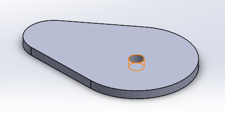
- You should see it populated in the menu on the left. You can make other changes here as well, such as the speed of rotation.
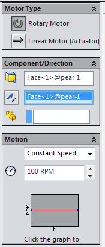
- Once you're done, watch the animation using the play buttons.
Badge It - Platinum
- SolidWorks can be used to produce animations.
- Independently (or with a little help from your teacher), produce an animation of one of your cams rotating.
- Using the save icon, you can produce a video of you cam moving.